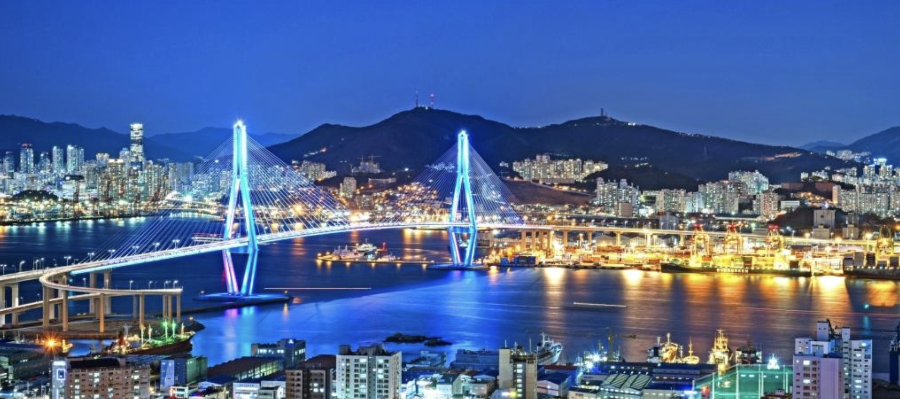

빛나는 야경
야경이 아름다운 밤, 부산(Busan)

부산하면 떠오르는 곳이자 여름을 즐기려는 청춘들로 한낮의
태양보다도 뜨거운 정열이 가득한 해운대 해수욕장이 있습니다.
모래사장에 울려 퍼지는 피서객들의 환호성과 크고 작은 행사와
공연들이 그 분위기를 더욱 물오르게 합니다. 밤이 되어도 꺼지지
않는 해운대의 불빛은 주변을 더욱 화려하게 만들고 이를 담기 위해
여행자들은 쉬지 않고 셔터를 누릅니다. 바다와 함께 아쿠아리움과
식당과 카페로 지루할 틈이 없는 해운대 해수욕장입니다.
광안리 해수욕장은 태양 아래 반짝이는 푸른 바다와 밤하늘을
수놓는 광안대교의 야경으로 눈이 즐거운 곳입니다.
해녀분들이 싱싱한 해산물을 파는 해녀 막사를 지나면 나타나는
어울마당에는 바위를 적시는 바다와 모던한 시티뷰의 이색적인 조화가
펼쳐집니다. 트레킹 코스의 끝에는 아찔한 절벽 위에 자리한 오륙도가
기다리고 있습니다. 바다 위를 걷는 듯한 착각이 드는 오륙도의 스카이워크까지
광안리 바다를 눈 안에 가득 담아보실 수 있습니다.